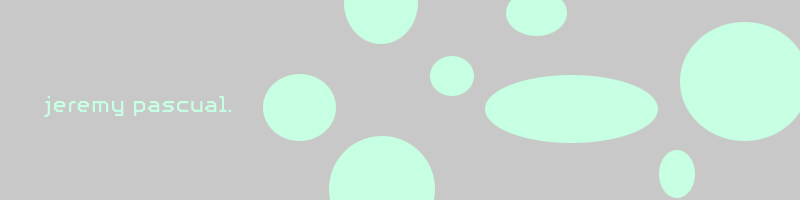
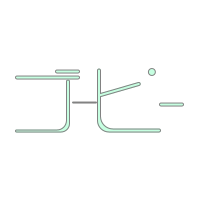
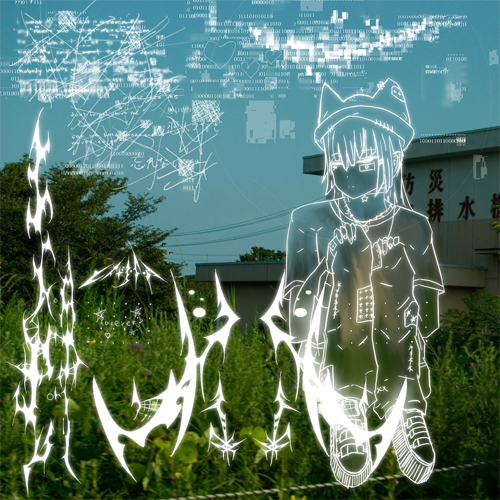
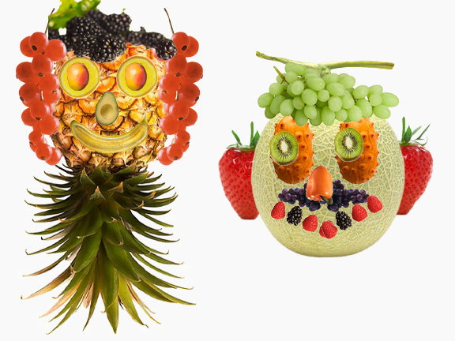
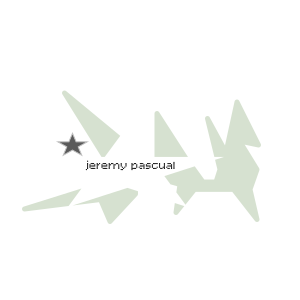

jeremy pascual.

biography
Hi! My name is Jeremy, I am currently a Visual Communication Design Major at San Francisco State University. I am from the beautiful city of San Francisco in the state of California, and I was born on the 2nd of January, 1997. Creating art has always been a hobby for me, in terms of drawing, to graphic design, and painting and I've been doing that since I was a kid. Some of my hobbies besides creating art is making music, and DJing, and I have traveled to mulitple destinations to DJ such as Tokyo, New York, Los Angeles, and Covina. I also release original music and work on remix commissions.
One of my goals as a designer is to create designs that will help others navigate the world of music and art such as making it more accessible to those who don't have much access to that world in general, and are looking to gain access to it. I am also passionate about creating art because I love to create art! Lets work together!
- resume -
portfolio



education
San Francisco State University - Visual Communication Design
- August 2026 - December 2028 (expected)
experience
(MALIN+GOETZ) - Retail Specialist / Sales Associate - March 2024 - Present
- Maintained visual merchandising, stock organization, and operational standards in a fast-paced, entrepreneurial retail environment
- Delivered consultative skincare, fragrance, and lifestyle recommendations for a premier gender-neutral apothecary brand
DSPTCH LLC. - Sales Associate - March 2021 - September 2023
- Organized racks and shelves to maintain store visual appeal, engage customers, and promote specific merchandise, prepared merchandise for the sales floor by pricing or tagging
- Managed customer returns, exchanges, and refunds in accordance with store policy